用户 → 仓库 → 服务 → 端点
右上角可切换演示身份。用户凭证、仓库、服务和目标都通过页面操作；配置字段沿用原有含义，不再要求日常维护文件。
用户
默认入口。保留 API Key、SSH Key、DMS、SLS 四组凭证；下方管理人员；“显示停用人员”默认关闭，勾选后可查看并重新启用停用成员。

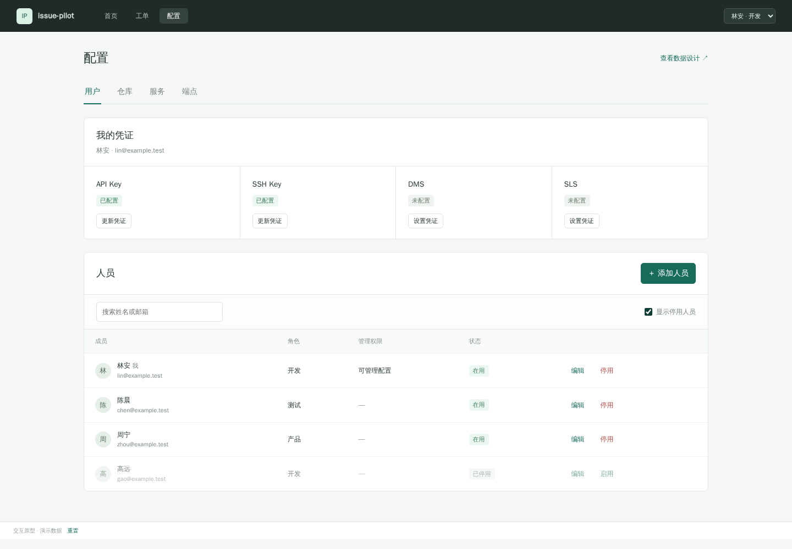

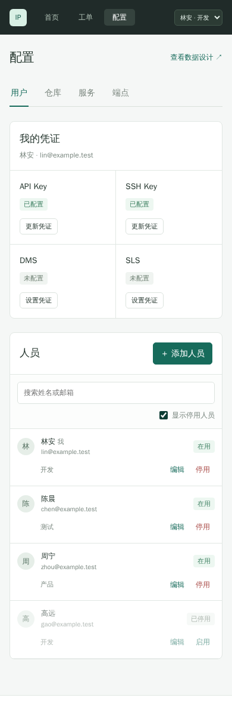
更新个人凭证
直接填写新值，留空保留原值，不再选择操作模式；底部取消／保存，清除入口低强调。

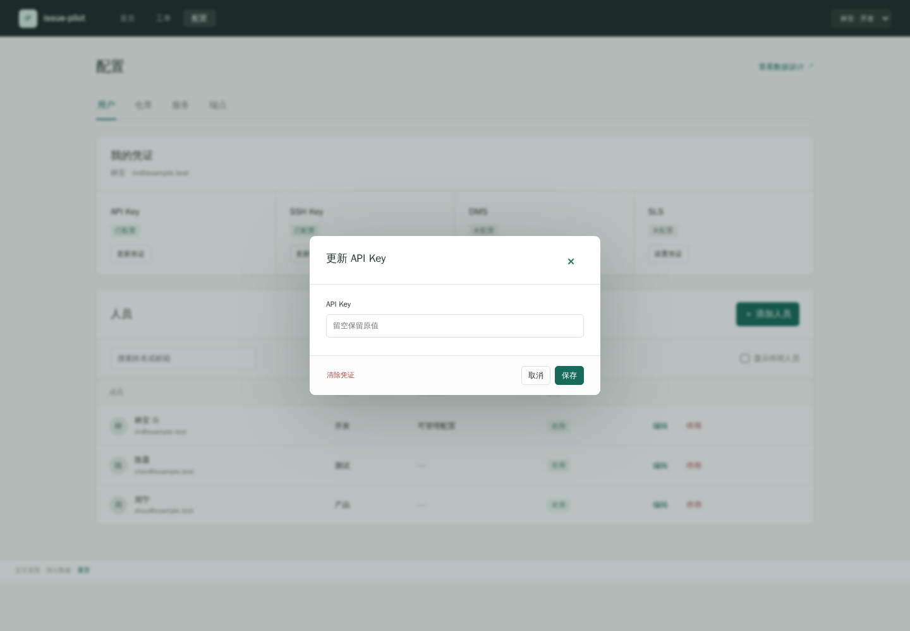

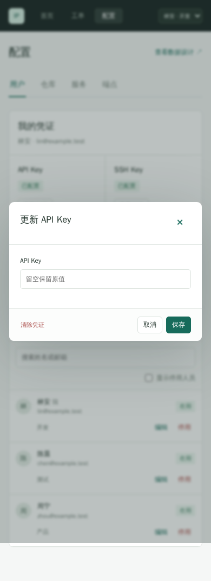
仓库
统一登记地址与显示名，查看使用服务。服务选择这里已登记的仓库。

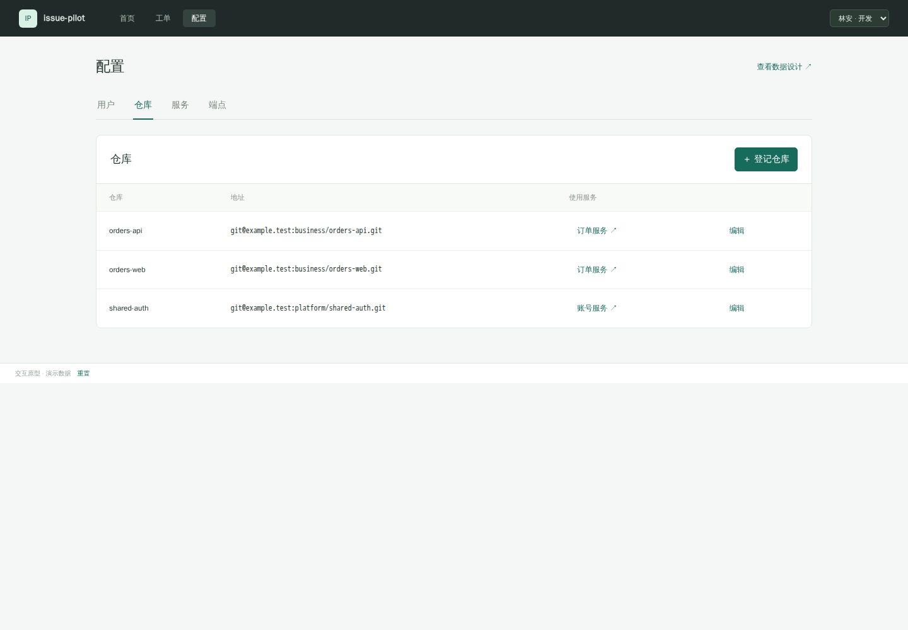

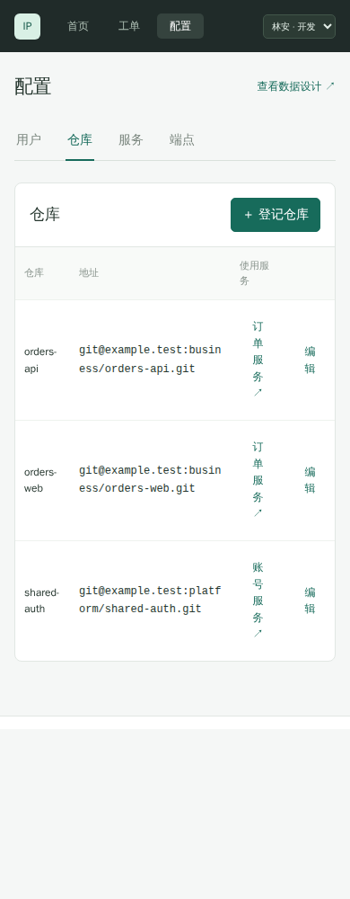
服务
服务采用居中的浅色圆角分段 Tab、白色选中项，右侧固定添加／编辑；代码分支卡片独立展示。开发基线只读继承正式分支。下方代码分支及服务描述，按环境展示 MySQL、DMS、SLS 完整字段，直接在页面维护，无配置文件预览入口。

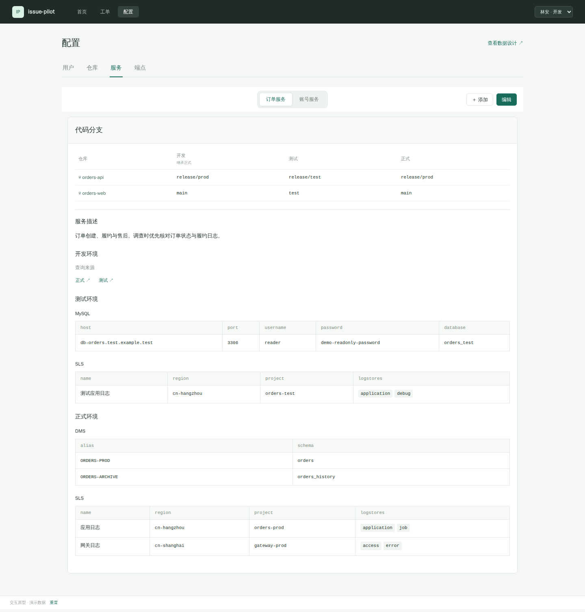

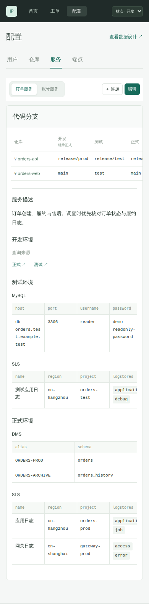
服务编辑
开发基线只读继承正式分支，正式／测试按环境展开编辑；MySQL、DMS、SLS 目标可新增、编辑、移除。取消保留原数据，保存后刷新可验证结果。添加目标会停留在当前环境并定位新输入框，移除不跳回顶部。服务删除区分历史占用。


开发环境
开发代码基线自动使用对应仓库的正式分支，只读展示，不单独设置。修改正式分支会即时更新，工单继续使用独立开发工作区。

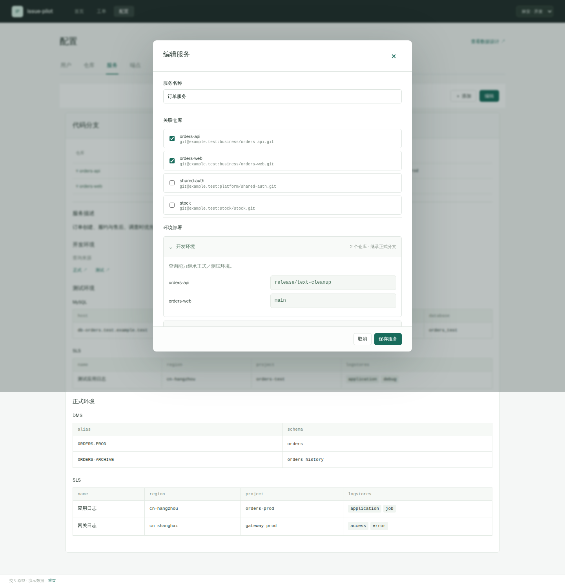

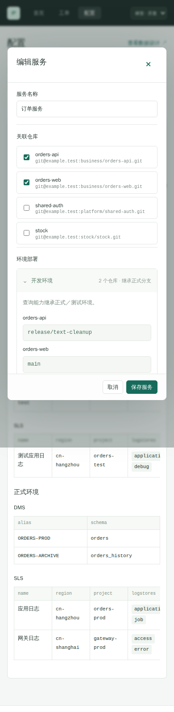
端点
沿用当前客户端配置：Pi／Cursor／Claude Code、VS Code、Codex 格式切换、复制与工具说明。此处仅演示入站 MCP 接入。

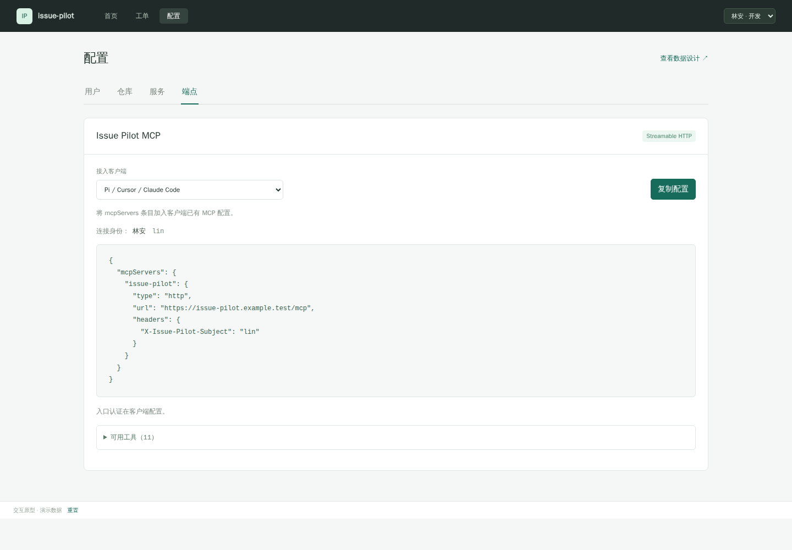

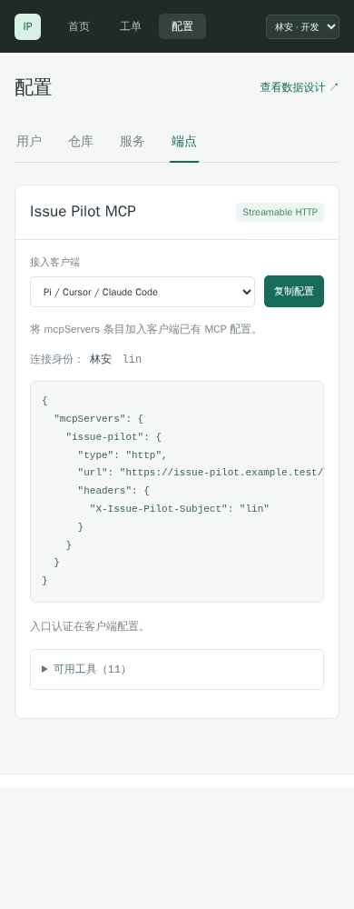
演示数据，不连接生产。Playwright 1.62.1 在 1440px / 390px 完成实际交互检查；复制内容通过剪贴板 stub 验证。